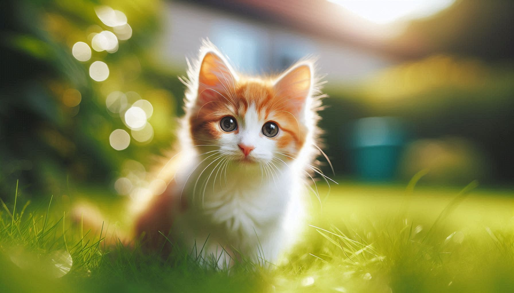

Frajola
Um senhorzinho muito carinhoso que adora um colo e um bom sachê. Está pronto para encher uma casa de amor.
Quero conhecer o FrajolaResgatamos, cuidamos e encontramos lares amorosos para gatos em situação de abandono. Cada vida importa. Faça parte dessa corrente do bem!
 Quero Ajudar Adote um AmigoNossa missão é reduzir o número de animais abandonados, promovendo a castração, a posse responsável e encontrando famílias perfeitas para nossos resgatados. Já demos uma nova vida para mais de 500 gatinhos.
Conheça nossa históriaUm senhorzinho muito carinhoso que adora um colo e um bom sachê. Está pronto para encher uma casa de amor.
Quero conhecer o FrajolaEssa pequena bola de pelos é pura energia e diversão. Se dá bem com outros gatos e adora explorar.
Quero conhecer a LuaNosso último evento foi um sucesso emocionante! Graças à ajuda de voluntários e da comunidade, encontramos famílias para 22 dos nossos resgatados...
Leia a matéria completa